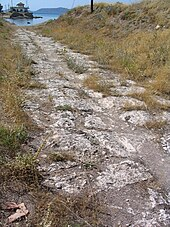
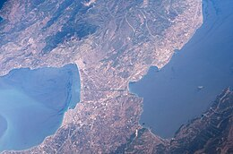

Alfonso Then | Coaching en Analítica y Estrategia
Datos · Analítica · Estrategia · Negocios
En este sitio te invito a que aprendamos juntos a analizar situaciones de negocio, y con ello a desarrollar nuestras capacidades analíticas hacia al logro de nuestros objetivos profesionales y organizacionales.
Este aprendizaje busca ser práctico, activo e interactivo, con un foco puesto en un conjunto selecto de casos de estudio, alrededor del cual giran los datos, modelos, reportes, lecturas y cursos compartidos.
Para ello nos apoyaremos en cuatro pilares que, por más de 25 años y de manera combinada, han venido ha constituir lo que llamaría mi ikigai: datos, análisis, estrategia y coaching en los negocios.
Datos
Los datos representan atributos medibles de un hecho bajo análisis.
Ahora bien, el valor de los datos no depende necesariamente de su volumen, de su velocidad y/o de su variedad, sino de su relación a los hechos (veracidad y confiabilidad), a la estrategia (utilidad y relevancia) y a la toma de decisiones (oportunidades y riesgos).
Análisis
El análisis examina los componentes esenciales de un hecho para entenderlo.
Un entendimiento no sólo por sus efectos sino también y sobre todo por sus causas.
Por eso, para cualquier tipo de análisis (descriptivo, explicativo, predictivo y prescriptivo), no basta la mera asociación estadística de variables, sino que se requiere identificar la estructura causal mediante algún tipo de intervención.
Estrategia
La estrategia de una empresa no se puede reducir a una simple rutina de mejora continua, ni siquiera a un ejercicio periódico de planificación, sino que está constituida y surge de manera emergente del continuo hacer de la organización al lidiar con su entorno.
Por eso, parafraseando a Alejandro Salazar en su exquisito libro “La Estrategia Emergente” (Salazar Yusti 2021), decimos que: “Estrategia es lo que se hace en la dirección de la ventaja”.
Así que más que con una agenda, un calendario y un cronómetro la estrategia se identifica con un viaje, un mapa y una brújula, o mejor aún con una evolución, un genoma y un propósito.
Coaching
El coaching hace que otros desarrollen sus capacidades hacia sus objetivos.
De aquí, que el coaching implique un proceso creativo, estimulante e inspirador que busca potenciar las capacidades del cliente (persona y/u organización) hacia el logro de sus metas.
Un coach en analítica y estrategia busca elevar la capacidad de análisis de su cliente y asistirlo de manera colaborativa en identificar patrones de acción vinculables a la estrategia emergente de la organización, que contribuyan al logro de los objetivos de la misma, creciendo y desarrollándose en su entorno desde su zona de ventaja.
¿Por qué “dolcos.net”?
A finales de 1995, cuando utilicé por primera vez el internet con el buscador Web AltaVista [¡no existe la vejez sino la juventud acumulada! 😄], uno de los resultados de mis primeras búsquedas fue el hallazgo de un antiguo paso terrestre para navíos denominado Diolkos (𝚫ί𝛐𝛌𝛋𝛐ς), utilizado por griegos y romanos de la antigüedad para ahorrar tiempo y recursos atravesando lo que en aquel entonces fue el angosto istmo de Corintio. Un paso terrestre que en la era moderna se transformó en marítimo, y que hoy se conoce como el canal de Corinto con un propósito similar, si bien más rápido y eficiente.
Al iniciarme en diferentes páginas de subscripción y sitios de chat en los primeros días del internet, necesitaba un nombre de usuario y recurrí a mi primer hallazgo. Pero, para volverlo un poco más fácil de pronunciar y escribir, en lugar de diolkos usé dolcos como abreviatura.
Más tarde, al iniciarme en el mundo de la consultoría de negocios, caí en la cuenta que todo negocio lo que busca son conexiones de valor; todo tipo de conexiones de valor: personas, recursos, datos, insights, etc. Y entonces reflexioné que dolcos (el antiguo diolkos) era y sigue siendo eso mismo una conexión o atajo de gran valor.
Eso queremos ser para ti: una conexión que agregue valor en tu aventura personal, profesional y organizacional a través del mundo de los datos, el análisis y la estrategia en los negocios, de acuerdo a tu propósito y tus capacidades.

